Welcome, fellow fire hydrant enthusiast. I created these pages to give a little bit more detail on Hong Kong fire hydrants (and maybe some other cities) because I'm sick of online slop that only mention the most generic Hong Kong fire hydrant info, such as the "red = fresh water, yellow = salt water, green = waste water, silver = new, yellow being phased out because of salt water corrosion". It is not that simple, nothing is that simple. It is also questionable if some of these claims are correct (the green=waste water and yellow hydrants being phased out ones).
Overview of hydrants for layperson:
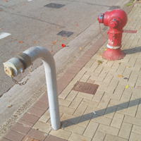
Fire Hydrants in Hong Kong
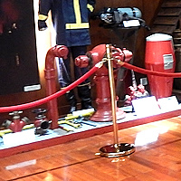
Fire Hydrants in Macao
Pages for specific hydrant types in Hong Kong:
Round Head
Swan Neck
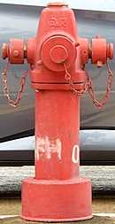
AVK Model 2700
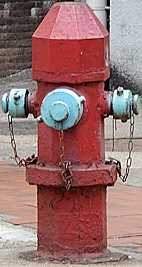
"Octagonal" hydrant
"Prototype Pedestal"
Heavy Draw-off hydrant
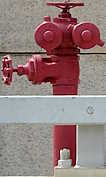
"hydrants on long viaducts and flyovers"
Double Head Swan Neck
A. P. Smith O'Brien
Custom private hydrants at the Lutheran Theological Seminary
Other details about Hong Kong fire hydrants for hydrant nerds:
Fire Hydrant colours and painting
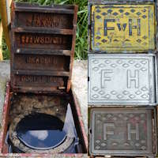
Fire Hydrant surface box
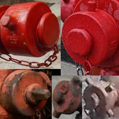
Fire Hydrant cap types
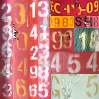
Fire Hydrant numbers
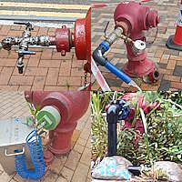
Fire hydrants with attachments
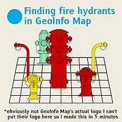
Finding hydrants in GeoInfo Map
Fire hydrant information in public records
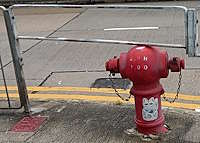
The confusing "Pedestal" hydrant name
Personal opinion, experience, and random discoveries about Hong Kong fire hydrants for true hydrant nerds:
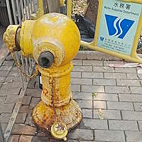
The myth of seawater hydrants being phased out and becoming rare
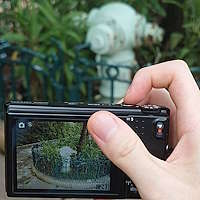
Fire hydrant photography
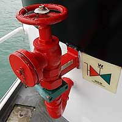
Fire hydrants "on the sea"
Swan Neck number 69
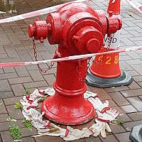
Octagonal hydrant 53 and Round Head 28459
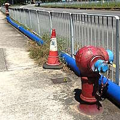
Round Heads on Che Kung Miu Road
Let me be clear: I am just an enthusiast who like to photograph fire hydrants and my goal is to share what I know with other current and prospective enthusiasts, I do not aim to become the "FireHydrant.org of Hong Kong". I do mention technical details from time to time but that is not my main focus here, I have passed the information to FireHydrant.org and they can host the technical information there. Also, I do not want to pretend to be the genius that figured all these out. I stand on the shoulders of giants - those who shared their knowledge online regarding Hong Kong fire hydrants, I simply compiled all these info into one place because no one seems to have done something like this before (and I also discussed some of my observations and discoveries). I also want to emphasize that I do not have insider knowledge about the Water Supplies Department or the Fire Services, everything I know is available publicly for free (though it did take quite some time to find out about them). And this is also my middle finger to all those clickbait slop that only talk about the most basic Hong Kong fire hydrant info without anything to back up their claims (especially the green hydrant use processed waste water myth). But I guess they will just steal stuff from this website without crediting me or my sources, what a terrible world we live in.